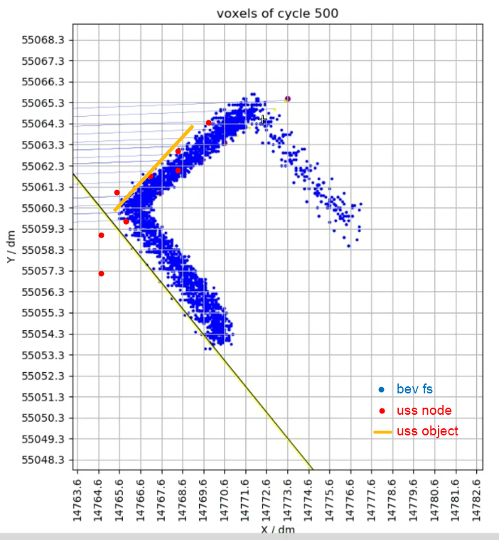

Pillar/Vehicle fitting filter solution

Only work in the Guidance phase
Code process:
Perform categories of square columns/cylinders/vehicle observation points according to VIPER-FS semantic information
GUO hongming
For the fitting of each class, the fitting scheme is to refine the design
GUO hongming
Use the fitting result to be associated with the USS input.
Related with the fusion result with the fitting result, and the node point on the association is eliminated
Insert the fit results into the node set, output it to the downstream
Technical solutions:
Multi -frame fitting, or single -frame fitting and then tracking the fitting result?—— Observe the data before deciding
How to get a straight line from point cloud coordinates?
How to get a line segment in a straight line?
Pipeline
In each frame of Viper-Fs, the Pillar Object observes cluster, and each pillar generates the corresponding group. GUO Hongming (BCSC/EPA1, XC-AS/PJ-WIN-PER7)
initialization:
The first frame of the point cloud quality of each group is used as its ROI round heart, radius pre-set.Determine whether the Group is on both sides of the target parking space. If it is the pillar next to the target parking space, select the group and initialize the target pillar.
Subsequent frames, the Viper-FS Pillar Group of each frame, and a distance judgment with Target Pillar ROI. In Target Pillar Roi, it is a new observation of Target Pillar;
The point cloud coordinates of each frame are used as a new value -added, and the average coordinates of the movement of the qualitative heart is calculated to update the ROI.
Pllar observation of continuous n {3} frames, and the outline is fitted together.
REN Sixu (XC-AS/EPF2-CN) Target initialization, ROI initialization, observation association
renew
Each target pillar observation group, judge the quality of the observation group, decide whether it is used to Renew Pillar
According to new observations, the Outline / Renew is re -carried out.
tracking
The adjacent frame combination results are performed to fuse the time domain, such as low -pass filtering to reduce the jitter of the Pillar Contour.
Outline
Perform straight-line fitting to generate a straight line Pillar-Line; calculate the angle of the Video-Line of the Pillar-Line and CPS; according to the parallel assumptions, to correct the slope of the Pillar-Line; and then fix the straight line under fixed sloping or perform straight lines under the slope or perform straight lines for linear lines.Choose (to this slope angle);
If it is an unilateral observation, based on the observation of Point, a straight -line interception is performed to generate the line segment.
If it is a bilateral observation, calculate the outline of L and intercept the line segment.
LIU Yong (XC-AS/PJ-WIN-PER7) === Plan survey
pose opt + structure opt;
pose: x, y, yaw
structure: width, length
Observation preservation strategy
Observation of Pillar/Vehicle at the Searching stage
Searching stage
According to the key frame extraction of the target location: the X value of the objective heart in the self-car coordinate system is regarded as an effective observation within the range of (-0.5m, 6.5m)Change, extract a key frame.In principle, Searching is less than 10 kf
workaround: Simplified version, save one frame every 10 frames first
Data quality assessment
It is judged by BEV-FS Point to determine its quality based on its corresponding camera observation angle and distance; similar strategies are used to calculate the Weight value in the CF code, which can be reused.
Do not do the first edition
Target removal
After a certain distance behind the car, the target will be deleted
Not to do it temporarily
Guidance stage
Select the Guidance phase, you need to extract the target of the structure
In the Guidance stage, new observations are preserved when selecting the target.
In the field of vision in the field of vision, new observations are no longer preserved.
Save information
BEV-FS Points of the target
BEV-FS semantic category of target
Current frame self -car EGO POSE
Time stamp of current frames
X, Y (the first edition does not do) under the coordinate system of the target quality
The parking status of the current frame (Searching, Guidance)
Structural extraction algorithm needs to be distinguished by Searching, Guidance observation
7/13 todo
Each 10 -frame keyframe extraction
Package the observation information of the target into a structure, which is convenient for new information to increase information in the future.
Target contour RENEW strategy
Target Initialization:
Initialize the target, determine the goi area of the target, and point cloud observation
Outline and optimization:
With the increase of observation point clouds, try to fit the outline
Optimization of time domain contour, increase the stability of the contour, and evaluate the confidence of the contour
Contour RENEW
In the Searching stage, when the left/right fish eye camera passes through the target distance (such as 1.5m), the target observation perspective is relatively complete (you can see the three edges);Fix it and save it in the vector Map.
During the Guidance stage, the pillars and vehicles on both sides of the target parking space are mainly renewed; if the car is borrowed, the observation and outline of the pillars/vehicles that are close to the borrowing also require Renew.
In the Guidance stage, when the target enters a better observation vision, Renew observation, and adjust the outline of the target according to the observation; because the observation perspective at this time is not necessarily complete, it may only be based on the observation outline. Pose-only adjustment (pose-only) , Do not re -fit.
7/13
'Accept APA State signal: Searching or Guidance
In the Guidance phase, accept the target slot signal
Reorganization/selecting observation data
Call the pillar_fitting function
7/13